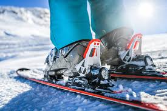
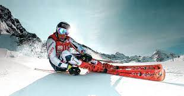

Our Story
Atomic Skis, founded in 1955 in Austria, has grown into one of the most innovative and respected ski brands in the world. From our humble beginnings, we have always strived to push the boundaries of ski technology, delivering high-performance products for all types of skiers. Our passion for skiing drives us to craft skis that offer precision, speed, and control for all levels of expertise.

Commitment to Innovation
We are dedicated to continuous improvement, ensuring that our skis remain at the cutting edge of the industry. From our groundbreaking Redster racing series to the versatile Backland touring skis, Atomic is synonymous with quality and innovation. We are proud to collaborate with world-class athletes and use their feedback to refine our products to meet the demands of the most challenging slopes.
Why Choose Atomic Skis?
Innovation
Atomic's research and development team works tirelessly to ensure each ski performs at the highest level, whether it's for competition or recreational skiing.
Precision Engineering
Our skis are crafted with the finest materials, designed to provide skiers with unmatched control and responsiveness on the slopes.
Eco-Friendly Practices
At Atomic, we are committed to sustainability. We minimize our environmental impact by using eco-friendly materials and processes throughout the manufacturing cycle.
Trusted by Professionals
Atomic skis are trusted by some of the top professional skiers in the world, including Mikaela Shiffrin and Marcel Hirscher. Our athletes compete on the world stage, achieving victory with Atomic’s cutting-edge equipment. Whether it's alpine skiing, freeriding, or cross-country, Atomic has proven itself on the slopes time and time again.
